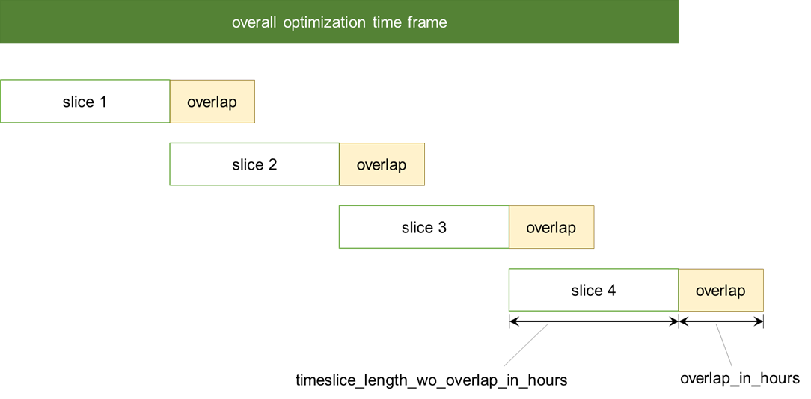

Model description¶
Contents
Feel free to directly jump to the section of interest.
Background¶
Overview¶
The dispatch variant of the power market model POMMES pommes-dispatch
enables the user to simulate the dispatch of backup power plants,
storages as well as demand response units for the Federal Republic of Germany
for an arbitrary year or timeframe between 2017 and 2030.
The dispatch of renewable power plants is exogenously determined
by normalized infeed time series and capacity values.
The models’ overall goal is to minimize power system costs
occurring from wholesale markets whereby no network constraints
are considered except for the existing bidding zone configuration
used for modeling electricity exchange.
Thus, the model purpose is to simulate dispatch decisions
and the resulting day-ahed market prices.
Energy-economic background¶
Feel free to skip that section if you are familiar with power markets design as well as fundamental bottom-up power market modeling.
Wholesale power markets in Europe are organized as a sequential series of markets from futures and forwards markets to short-term markets (spot markets). Since futures and forwards markets mostly serve for hedging price risks of short-term markets, we only focus on the spot markets which determine the actual operation of plants and include a physical delivery of electricity to the system.
There are two kinds of spot markets, the day-ahead market as well as intraday markets (auctions and continuous trading). We in turn focus on the day-ahead market which is the most relevant one.
Our model in a way abstracts from the real market constellation and assumes all plant operators to bid into the day-ahead market. We in turn do not explicitly model power plant operator’s bidding behaviour, but assume them to offer their capacities at their marginal costs in a perfectly competitive quasi day-ahead market in order to serve an inflexible and exogenously given demand. We also include demand response which enables parts of the demand to adjust in a flexible manner. Thus, the aggregated power plants capacities sorted by their marginal costs result in a merit order that is similar to the aggregated supply curves in the real day-ahead auction procedure in competitive power markets.
The perspective of our model is to assume that there is a “social planner” optimizing the power system in terms of minimizing its overall (dispatch) costs under the prevalent constraints such as demand coverage or power plant capacity limits. We assume this social planner to have perfect foresight over the entire simulation time frame. We offer a Rolling horizon approach to break with this assumption. Our bascic approach is quite common for fundamental bottom-up modeling of power systems since it enables the modeler to produce close to reality results in a highly simplified modeling setting with quite large system boundaries.
What is more, is that power markets in Europe are interconnected and operated within (mostly national) bidding zones. We model the German neighbouring countries and their power plants in a rather aggregated manner in order to improve our day-ahead price prognosis and the dispatch result for Germany.
In order to improve our model results, we account for some power system inflexibilites that lead to a deviation from the cost optimum and are expressed by introducing additional constraints (such as minimum load profiles for CHP power plants that are empirically derived to serve heat demands) or adjusting parameter values (such as the overall capacities of coal power plants that has not been fully made use of).
Mathematical background¶
Feel free to skip that section if you are familiar with fundamental bottom-up power market modeling using a linear programming approach.
Technical background¶
pommes-dispatch builds on the framework oemof.solph
which allows to model energy systems in a graph-based representation
with the underlying mathematical constraints and objective function terms
implemented in pyomo.
Some of the required oemof.solph features - such as demand response modeling -
have been provided by the POMMES core developers which are also active in
the oemof community.
Users not familiar with oemof.solph may find further information
in the oemof.solph documentation.
We use the following components from the oemof.solph framework in order
to represent the following units of the power system:
- Transformer: (conventional) power plants, renewable units for Germany in the
market premium scheme, interconnetors to other bidding zones
Source: commodity sources, fixed renewable units infeed
Sink: national electricity demands
GenericStorage: electricity storage units (pumped storage and reservoir)
Buses: Elements to connect all power resp. energy flows
Rolling horizon approach¶
A rolling horizon approach can be used for multiple use cases, e.g.
to force a break with the perfect foresight paradigm and to model imperfect foresight
to reduce model complexity and ensure model solvability.
The idea is to slice your overall optimization time frame into shorter horizons and thus loose the perfect assumption as well as the global optimum over the entire simulation time frame. In order to prevent storage units from being emptied at the end of each time slice, an overlap should be defined. I.e., only parts of the next time slice are used while the overlap is dropped. The following figure explains the basic idea.
Image based on Büllesbach (2018), p. 62 and Marquant et al. (2015), p. 2141
The model results are then obtained by concatenating the results for the individual
time slices. There is a rolling horizon implementation integrated as an
alternative to a perfect foresight simulation in pommes-dispatch, see
Using pommes-dispatch.
Model categorization¶
The model in brief can be characterized as a bottom-up electricity market optimization model. In the following, a model characterization based on Hall and Buckley (2016) is introduced:
### Model purpose and structure
specific: power supply and power prices | | Structure of the model | Demand: exogenously (except for demand response usage) <br> Supply: RES exogenously; all other power sources endogenously optimized | | Geographical coverage | National: Federal Republic of Germany + imports / exports from / to adjacent electric neighbors | | Sectoral coverage | Power market (effectively day-ahead) from a macroeconomic point of view (no bidding simulation) | | The time horizon | Short (< 1 year) to Long Term (up to 2050) dependend on part model used and input data <br> LP dispatch model: usual time horizon 1 year <br> investment model: usual time horizon 2016 up to 2050 | | The time step | hourly or less granular dependent on part model <br> LP dispatch model: usual time step size 1 hour <br> investment model: usual time step size down to 4 hours or hourly using representative days |
### Technological detail
### Mathematical description
Mathematical formulation¶
All constraints formulations can be found in the oemof.solph documentation. We’ll provide a complete mathematical description for the parts we used here soon.
References¶
Büllesbach, Fabian (2018): Simulation von Stromspeichertechnologien in regionaler und technischer Differenzierung. Freie wissenschaftliche Arbeit zur Erlangung des Grades eines Master of Science am Fachgebiet Energie- und Ressourcenmanagement der TU Berlin.
Hall, Lisa M.H.; Buckley, Alastair R. (2016): A review of energy systems models in the UK. Prevalent usage and categorisation. In: Applied Energy 169, S. 607–628. DOI: 10.1016/j.apenergy.2016.02.044.
Marquant, Julien F. ; Evins, Ralph and Carmeliet, Jan (2015): Reducing Computation Time with a Rolling Horizon Approach Applied to a MILP Formulation of Multiple Urban Energy Hub System. In: Procedia Computer Science 51 (2015), S. 2137–2146. – ISSN 18770509.